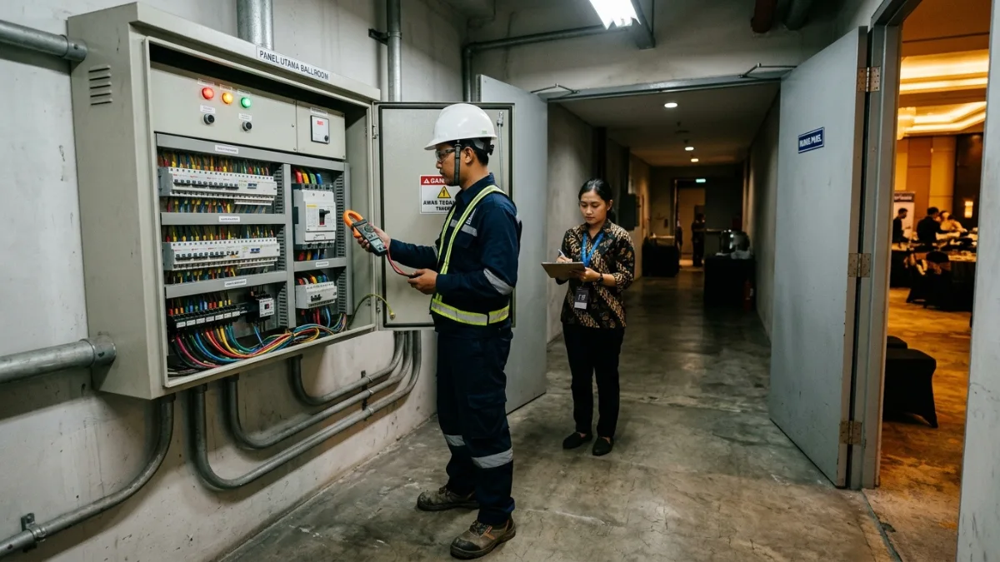

Biaya tersembunyi sewa gedung gala dinner adalah pengeluaran di luar tarif ruangan, seperti pajak, layanan, listrik, lembur, dan kebersihan, yang dapat menaikkan total anggaran signifikan.
- Tarif sewa ruangan hanya satu bagian dari total biaya gala dinner.
- Biaya tambahan yang paling sering terlewat meliputi pajak, layanan, listrik, lembur, dan kebersihan.
- Harga gala premium 2026 menunjukkan bahwa biaya per tamu mencakup jamuan dan hiburan, bukan hanya ruang.
- Minta rincian tertulis dan tanyakan apakah harga sudah termasuk pajak.
- Siapkan dana cadangan agar kejutan biaya tidak menggagalkan acara.
Apa Saja Biaya Tersembunyi yang Sering Muncul?
Biaya tersembunyi yang sering muncul meliputi pajak, biaya layanan, listrik tambahan, jam lembur, kebersihan, keamanan, parkir, bongkar muat, serta biaya makanan atau minuman dari luar.
Berikut daftar yang sebaiknya ditanyakan satu per satu kepada pengelola.
- Pajak dan biaya layanan: tarif yang ditawarkan kadang belum termasuk pajak daerah dan service charge.
- Listrik dan genset: penggunaan daya melebihi batas dasar dapat dikenai biaya tambahan atau mewajibkan genset sewaan.
- Jam lembur: acara yang berlangsung melewati durasi sewa dikenai tarif per jam.
- Setup dan pembongkaran: hari atau jam persiapan sering dihitung sebagai sewa tambahan.
- Kebersihan dan sampah: biaya kebersihan akhir kadang berdiri sendiri.
- Keamanan dan parkir: petugas keamanan tambahan dan pengelolaan parkir dapat dikenai biaya.
- Biaya makanan dari luar: sebagian pengelola menarik biaya khusus bila penyewa membawa katering sendiri.
- Uang jaminan: deposit kerusakan umumnya dikembalikan, tetapi mengikat arus kas panitia.
Daftar ini bersifat umum. Tidak semua venue menerapkan seluruh biaya, dan jenis biaya dapat bervariasi tergantung kebijakan pengelola serta jenis gedung.
Berapa Biaya Per Tamu yang Sebenarnya pada Gala Dinner?
Biaya per tamu sebenarnya adalah seluruh pengeluaran acara dibagi jumlah tamu, mencakup ruang, jamuan, hiburan, dekorasi, teknis, pajak, dan cadangan, bukan hanya tarif sewa gedung.
Pembanding 2026 menunjukkan hal ini dengan jelas. Menurut halaman acara resmi IFCCI pada April 2026, IFCCI Gala Dinner 2026 di Pullman Jakarta Central Park Hotel menetapkan tiket Rp2.400.000 untuk anggota dan Rp2.750.000 untuk non-anggota.
Harga tersebut mencakup makan malam lima hidangan, pertunjukan, dan program lainnya, bukan sewa ruang semata.
Artinya, panitia yang hanya melihat tarif sewa ruangan akan menghitung terlalu rendah. Kerangka hitung yang aman adalah sebagai berikut: biaya sewa ruang, ditambah biaya jamuan, ditambah biaya hiburan, ditambah dekorasi dan teknis, ditambah pajak dan layanan, ditambah cadangan; hasilnya dibagi jumlah tamu. Hasil pembagian itulah angka yang layak dibandingkan antar venue.

Teknisi memeriksa panel listrik utama ballroom venue acara sementara panitia mencatat kapasitas daya.Apakah Ada Pajak yang Dikenakan pada Sewa Gedung dan Acara?
Pajak yang dikenakan bergantung pada jenis pengelola dan jenis layanan. Penyelenggara perlu menanyakan apakah harga penawaran sudah termasuk pajak daerah atau pajak pertambahan nilai.
Aturan pajak atas sewa ruang, jamuan, dan hiburan melibatkan pajak pusat dan pajak daerah, serta dapat berbeda antar wilayah.
DDTCNews pada 9 Oktober 2026 menjelaskan bahwa jasa hiburan yang sudah dikenai pajak barang dan jasa tertentu pada prinsipnya tidak dikenai PPN, dengan tarif pajak barang dan jasa tertentu untuk hiburan secara umum paling tinggi 10 persen.
Tarif untuk kategori tertentu seperti diskotek, karaoke, kelab malam, bar, dan spa berada pada rentang lebih tinggi.
Penyelenggara gala dinner sebaiknya tidak menebak. Minta pengelola menyebutkan secara tertulis pajak apa saja yang berlaku, berapa tarifnya, dan apakah sudah termasuk dalam harga.
Bila acara dibiayai perusahaan, konsultasikan perlakuan pajaknya dengan bagian keuangan atau konsultan pajak. Informasi ini bersifat umum dan bukan nasihat pajak.
Bagaimana Cara Mencegah Biaya Tambahan Membengkak?
Cara mencegah biaya membengkak adalah meminta penawaran rinci, menanyakan setiap pos biaya secara eksplisit, menetapkan batas durasi dan daya, serta menyiapkan dana cadangan.
Langkah yang umum efektif adalah sebagai berikut.
- Minta penawaran per butir. Pastikan fasilitas, durasi, dan layanan tertulis satu per satu.
- Tanyakan pajak dan layanan. Pastikan apakah harga sudah final atau masih akan ditambah.
- Tentukan batas listrik. Hitung total kebutuhan daya dari tata suara, lampu, dan dapur.
- Jadwalkan acara dengan jeda. Beri waktu cukup untuk setup dan pembongkaran agar tidak terkena lembur.
- Tulis aturan katering. Hindari kejutan biaya makanan dari luar.
- Sisihkan cadangan. Dana cadangan sekitar sepersepuluh anggaran umumnya cukup untuk kejadian tak terduga.
Semua kesepakatan sebaiknya dituangkan dalam kontrak, sehingga janji lisan petugas penjualan tidak hilang ketika petugas berganti.
Sebagai contoh praktik, panitia dapat menyusun lembar anggaran dua kolom: kolom pertama berisi angka dari penawaran, kolom kedua berisi hasil konfirmasi tertulis pengelola untuk setiap pos.
Selisih antara dua kolom tersebut langsung menunjukkan biaya yang belum jelas. Lembar ini juga memudahkan bendahara panitia mempertanggungjawabkan pengeluaran kepada pimpinan atau sponsor.
Bagaimana Mengidentifikasi Penawaran yang Terlalu Murah?
Penawaran terlalu murah biasanya ditandai rincian yang kabur, banyak fasilitas bertanda opsional, aturan katering wajib, dan tidak ada penjelasan pajak, sehingga total akhir sulit diprediksi.
Penawaran yang sangat rendah patut diperiksa lebih teliti. Bandingkan dengan dua atau tiga venue lain pada cakupan yang sama.
Perhatikan apakah panggung, meja kursi, tata suara, dan kebersihan sudah masuk atau tidak. Perhatikan juga apakah durasi sewa cukup untuk setup dan pembongkaran.
Tanda lain yang perlu diwaspadai adalah tekanan untuk segera membayar uang muka tanpa kontrak tertulis. Venue yang profesional bersedia menjelaskan komponen harga dan memberi waktu wajar untuk membandingkan.
Penyelenggara juga dapat meminta contoh kontrak atau daftar harga resmi sebelum survei, sehingga seluruh pertanyaan mengenai biaya dapat dibahas langsung di lokasi bersama petugas yang berwenang.
Kesimpulan
Biaya tersembunyi sewa gedung gala dinner paling efektif dicegah dengan penawaran rinci, pertanyaan eksplisit soal pajak, listrik, lembur, dan katering, serta perhitungan biaya per tamu secara menyeluruh.
Gunakan kerangka hitung total, bandingkan venue pada cakupan yang sama, dan siapkan dana cadangan. Setelah angka final jelas, tuangkan semuanya dalam kontrak sewa yang tertulis.
FAQ